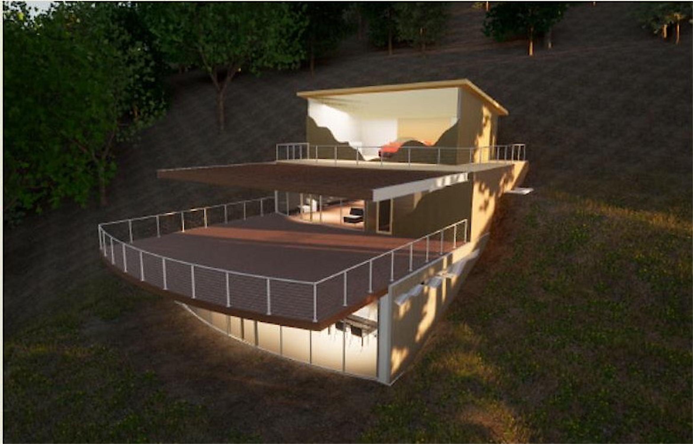
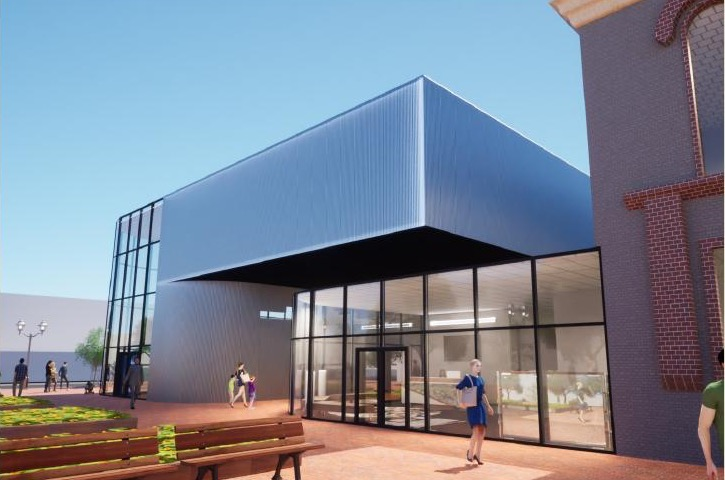
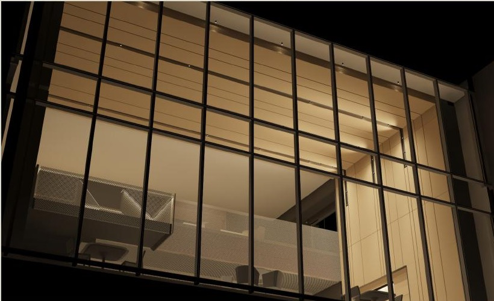
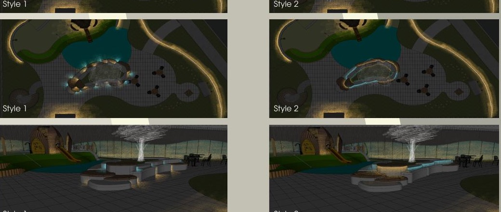
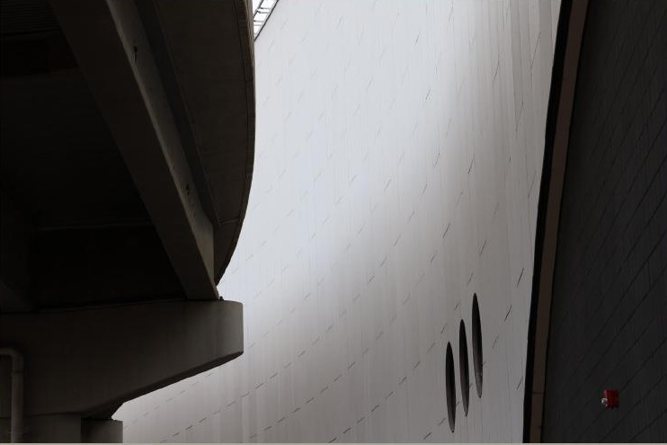

Architectural Engineering · Lighting Design
Julian
Kotara
Designing for the dialogue between light, form, and spatial atmosphere.
From daylighting studies and photometric concepts to architectural massing and material texture, I explore how light shapes human experience in the built environment.
Selected Projects
Move through the work.
Scroll sideways or use controls

01 ↗ LuxuryMountain Home Residential · Daylight Studies / 2025

02 ↗ Children'sMuseum Cultural · Massing & Transparency / 2025

03 ↗ UniversityCentral Lobby Lighting Design · Interior & Facade / 2025

04 ↗ Exterior BenchLighting Study Lighting Research · Mockups & Optics / 2025

05 ↗ Photography &Light Studies Visual Studies · Shadow & Geometry
About / Contact
I design for the way light changes everything.
Architectural Engineering student at the University of Colorado Boulder with an emphasis on lighting design. Exploring the intersection of architectural form, illumination, and human perception.
hello@juliankotara.com ↗